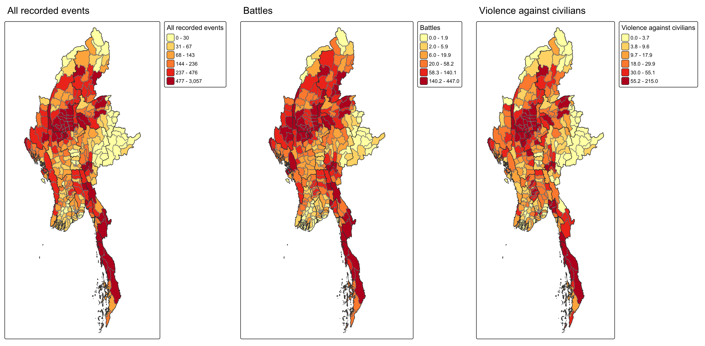
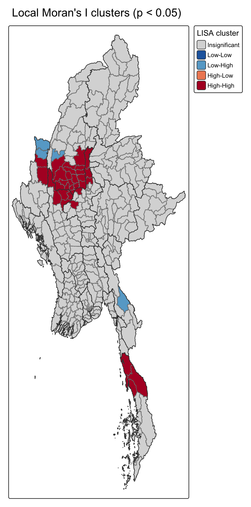
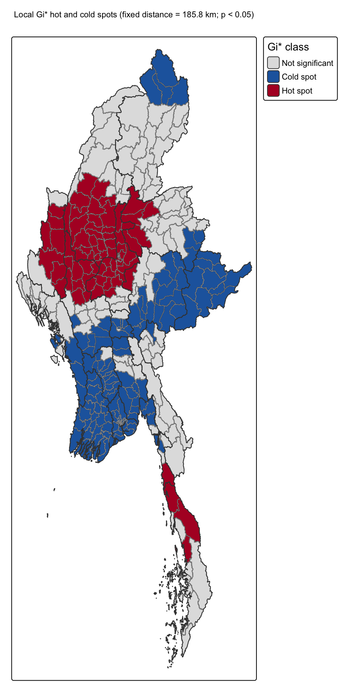
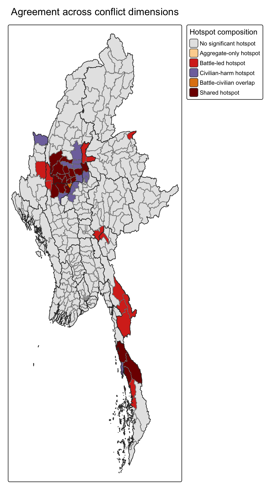
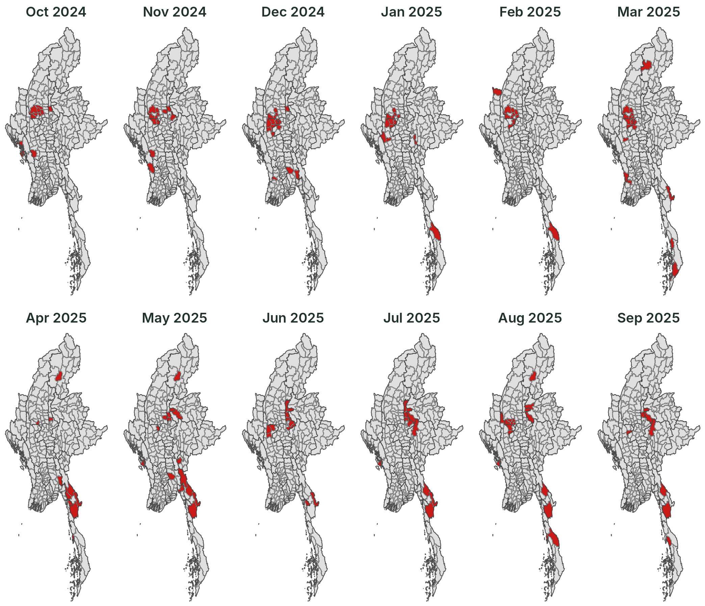
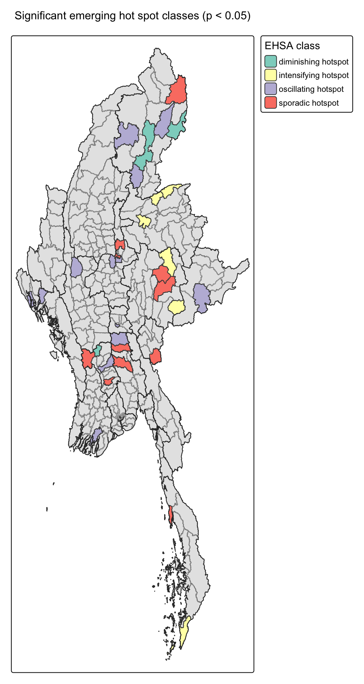
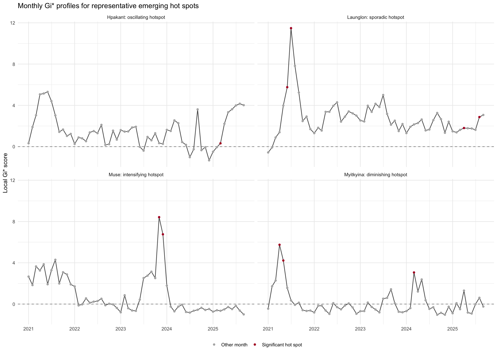

Where Myanmar’s recorded armed conflict concentrates, and how those hotspots move, 2021–2025
2026-10-23
01 Research question Why township-level hotspots matter for peace-building
02 Study area and data ACLED events, MIMU townships, data-quality gates
03 Analytical approach From a space-time cube to LISA, Gi* and EHSA
04 Key findings Where conflict clusters, what drives it, how it moves, how it trends
05 Public-safety implications Turning hotspot types into monitoring priorities
06 Limitations What the evidence can and cannot support
Where do recorded conflict events form significant local clusters, and which township hotspots persist, emerge, intensify or weaken through time?
87,103 ACLED events recorded in the study period
330 Myanmar townships (MIMU Admin-3)
57 monthly time steps, Jan 2021 – Sep 2025
18,810 township-months in a complete space-time cube
Why it matters. Myanmar’s post-2021 conflict is geographically uneven. A national total hides where violence concentrates and how that concentration shifts, which is exactly what peace-building and humanitarian teams need in order to decide where to look first.

Total recorded events by township, Jan 2021 – Sep 2025 (quantile classes within each map)
Inputs
Data-quality gates
The burden is highest in the Sagaing–Magway dry zone (Yinmarbin 3,057 · Salingyi 2,038 · Kale 2,009 events), while battles peak in Shan and Kayin (Nawnghkio 447 · Kawkareik 441) and civilian harm also stands out in Myingyan (Mandalay) and Hpakant (Kachin).
1 Prepare & match Clean ACLED fields, audit precision, assign every event to a township P-code by spatial join. → township event table
2 Space-time cube Count events per township-month and complete all 330 × 57 combinations. → regular monthly series
3 Local association Local Moran’s I separates clusters from outliers; local Gi* finds high- and low-value concentrations. → LISA & Gi* maps
4 Conflict composition Repeat Gi* for all events, battles and violence against civilians under one rule. → hotspot agreement map
5 Change through time Monthly Gi* maps, Mann-Kendall trends and Emerging Hot Spot Analysis. → EHSA hotspot classes
Weights · Queen contiguity, row-standardised Gi* band · fixed 185.8 km Permutations · 99, seed 626 Decision rule · p < 0.05, with BH-adjusted check Software · R: sf, sfdep, tmap, Kendall
Local Moran’s I asks
Is a township similar to or different from its neighbours? It finds clusters (High-High) and outliers (Low-High).
Local Gi* asks
Is this area a significant concentration of high (hotspot) or low (cold spot) event counts?
EHSA asks
How has each township’s Gi* changed across 57 months: intensifying, oscillating, sporadic or diminishing?

Local Moran’s I, Queen contiguity · red = High-High, light blue = Low-High

Local Gi*, 185.8 km band · red = hotspot, blue = cold spot
34 High-High clusters (Local Moran’s I), centred on Sagaing–Magway and Tanintharyi
4 Low-High outliers: quieter townships surrounded by high-conflict neighbours
78 / 148 Gi* hotspots / cold spots at a 185.8 km band; 67 hotspots survive BH adjustment

Takeaway. An aggregate hotspot map says where; the three-way comparison says what kind of violence drives it. Battle-led and civilian-harm areas call for different responses.

Significant monthly Gi* hotspots (red), Oct 2024 – Sep 2025, Queen contiguity
The last 12 months
Most persistent townships
7 of 12 months: Salingyi, Monywa, Pale, Singu
6 of 12 months: Pakokku, Myaing, Budalin, Yesagyo
The widest spread in the full 57 months was April 2023, with 30 hotspot townships at once.

34 significant classes at p < 0.05; 29 remain after BH adjustment.

Monthly Gi* profiles. Top: Hpakant (oscillating), Launglon (sporadic). Bottom: Muse (intensifying), Myitkyina (diminishing). Red points = significant hotspot months.
| Hotspot signal | Recommended response | Why |
|---|---|---|
| Recurring recent hotspots Salingyi, Monywa, Pale, Singu |
Sustained township-level review | Hotspot in 7 of the last 12 months: the concentration keeps coming back, it is not a one-off spike. |
| Intensifying hotspots Northern & southern Shan, Kawthoung |
Field verification and closer monitoring | Local concentration is still rising, so the situation may be getting worse. |
| Sporadic & oscillating hotspots Kachin, Rakhine, Bago, Mandalay |
Flexible, event-triggered monitoring | Violence disappears and returns, so a fixed long-run ranking would miss flare-ups. |
| Civilian-harm hotspots Mandalay, Sagaing, Chin |
Protection-focused programming | Recorded violence targets civilians directly, not only armed actors. |
| Diminishing hotspots Chipwi, Myitkyina, Pyay |
Follow-up before de-prioritising | A falling statistic does not prove that present-day harm is low. |
These maps are a screening tool, not a final decision. Field action should also weigh population exposure, displacement, access conditions and consultation with affected communities.
Data
Method
Interpretation
Reproducible workflow. The Quarto technical report runs end-to-end with a fixed seed (626) and records data sources, CRS, parameters and every analytical decision.
Technical report: Geospatial Analytics for Peace · Code: github.com/sabrinahao99/ISSS626-GEO
ISSS626 · Take-home Exercise 2 · Executive Summary